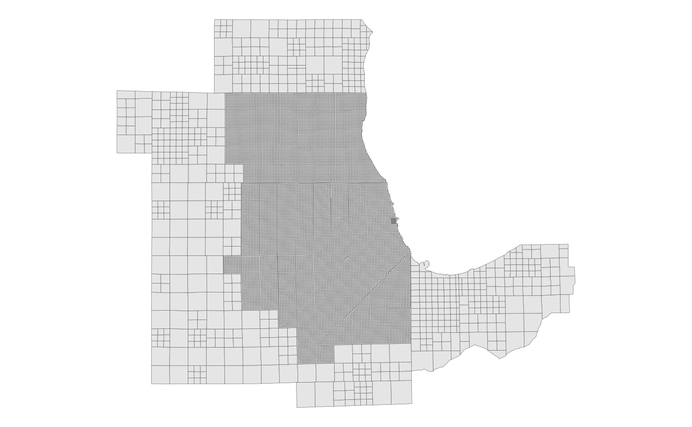

The 2017 subzones (a.k.a. MAZs) used by CMAP for travel demand modeling and socioeconomic forecasting. Covers the 7-county CMAP region, plus 14 other counties in Illinois, Indiana and Wisconsin (some only partially). The subzones are derived from the Illinois Public Land Survey System (PLSS), with most of the subzones within the CMAP region corresponding to a PLSS quarter-section. This forms a fairly regular grid of 0.5 mile wide squares, although there are some irregularities.
subzone_sf
A polygon sf object with 17418 rows and 11
variables:
Numeric subzone ID. Integer.
Numeric ID of parent zone, corresponding to zone_sf.
Integer.
The CMAP capacity zone characterization of the subzone. Integer.
1 = Chicago Central Business District
2 = Remainder of Chicago Central Area
3 = Remainder of City of Chicago
4 = Inner ring suburbs where Chicago street grid is generally maintained
5 = Remainder of IL portion of the Chicago Urbanized Area
6 = IN portion of the Chicago Urbanized Area
7 = Other Urbanized Areas and Urban Clusters within the CMAP Metropolitan Planning Area plus other Urbanized Areas in IL
8 = Other Urbanized Areas and Urban Clusters in IN
9 = Remainder of CMAP Metropolitan Planning Area
10 = Remainder of Lake County, IN (rural)
11 = External area
Is subzone in the CMAP MPA? (The MPA includes the 7 CMAP counties, plus Aux Sable Township in Grundy County and Sandwich & Somonauk Townships in DeKalb County.) Logical.
Is subzone in the City of Chicago? (Approximate, in some cases.) Logical.
Is subzone in the Chicago Central Business District? (CBD is defined as the area bounded by Chicago Ave, Halsted St, Roosevelt Rd, and Lake Michigan.) Logical.
4-digit ID of the PLSS township the subzone is in; first 2 digits are township, last 2 are range. Character.
Unique 5-digit FIPS code of the county the subzone is in; first 2 digits are the state FIPS code. Character.
State the subzone is in (IL, IN or WI). Character.
Area in square miles. Double.
Feature geometry. sf polygon.
# Display the subzones with ggplot2 library(ggplot2) ggplot(subzone_sf) + geom_sf(aes(fill = cmap), lwd = 0.1) + theme_void()